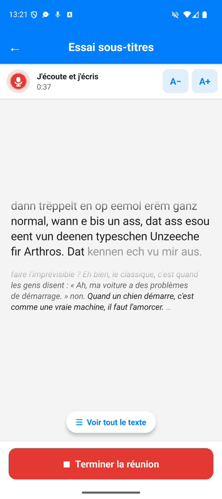

Lëtzebuergesch Clavier · Labs
Labs, c'est là qu'on essaie de nouvelles choses autour du luxembourgeois parlé, avant qu'elles rejoignent le clavier ou qu'on les abandonne. Chaque expérience a sa page : comment elle marche, où part votre voix, et ce qu'elle vaut.
Mettre par écrit une réunion, une interview ou un podcast, d'un fichier ou en direct, en séparant les voix. Directement dans le navigateur.
Transcrire un enregistrement →
Une application Android pour les réunions en luxembourgeois : ce qui se dit s'écrit en direct, avec la traduction en français dessous, puis le compte rendu se prépare tout seul, à relire et envoyer.
Voir l'application →🎓 Ces expériences reposent sur LuxASR, le service de reconnaissance de la parole luxembourgeoise de l'Université du Luxembourg. Merci à leur équipe.
Dites-nous ce que vous aimeriez voir tester, ou ce que donnent les essais en cours.